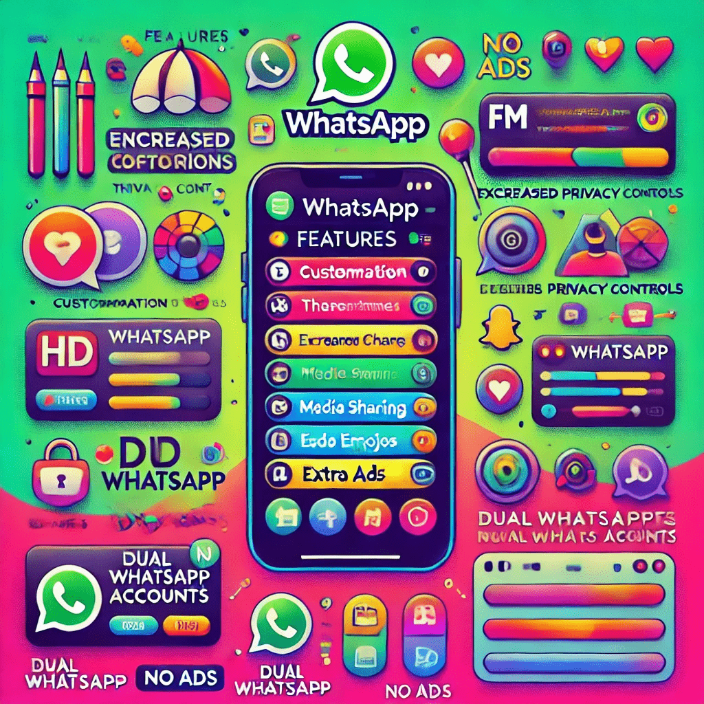

WhatsApp APK Mod: The Unofficial FM WhatsApp – A Game Changer for Your Messaging Needs
WhatsApp is one of the most popular messaging apps on the planet. It’s fast, easy, and keeps us all connected. Whether you're chatting with friends, sharing photos, or making video calls, WhatsApp gets the job done. But what if I told you there’s a way to unlock even more features than what the regular version offers? Enter FM WhatsApp!
FM WhatsApp is an APK mod of the original WhatsApp app that brings a whole bunch of cool features to the table. While WhatsApp is great, FM WhatsApp is like upgrading from a regular bicycle to a super-fast sports car. This modded version of WhatsApp packs a punch with customization options, privacy controls, and much more. Let’s dive into what makes FM WhatsApp stand out, and why you might want to give it a try (spoiler: it's packed with goodies!).
What is FM WhatsApp?
FM WhatsApp is a modified version of the official WhatsApp application, created by independent developers. The "FM" stands for "Fouad Mods," a name you’ll see around when looking up more information about it. This app is not available on the official Google Play Store, but you can download it as an APK file from third-party sources. Now, before you get worried about security, let me assure you that FM WhatsApp is used by millions of people globally, and it comes with a lot of cool perks.
FM whatsapp apk mod is built on top of the original WhatsApp, but with many extra features that the official version doesn’t offer. Think of it as a customization playground for WhatsApp lovers. And because it’s not available on the Play Store, you won’t find it getting regular updates from Google, but the developers behind FM WhatsApp constantly update it to keep things fresh.
Why Should You Care About FM WhatsApp?
If you're thinking, "Why would I need a modded version of WhatsApp when the original app works perfectly fine?" Well, let’s put it this way: FM WhatsApp gives you control over your WhatsApp experience like never before. You can tweak it to your heart’s content, all while enjoying features that the official version simply doesn’t support.
So, let’s break it down – what exactly makes FM WhatsApp such a game-changer?
1. Customization Galore
Let’s start with one of the biggest reasons to switch to FM WhatsApp: customization. Are you tired of seeing the same old interface on WhatsApp? FM WhatsApp offers tons of themes and color options to change the look of your chat app. You can modify the main screen, the conversations, the background, and even the font styles.
FM WhatsApp gives you more freedom than the regular version. You can go for a dark mode, a minimalistic theme, or even a flashy, colorful design—whatever floats your boat. Customization is one of those small things that can make a huge difference in your daily app experience.
2. Increased Privacy
We all know that privacy is important, especially when it comes to WhatsApp. It’s a platform where we share everything—texts, photos, videos, and voice messages. Sometimes, though, you may want to keep things private or make sure no one is snooping around. That’s where FM WhatsApp comes in with its impressive privacy features.
One of the standout features is the ability to hide your “last seen” status. If you don’t want people to know when you were last online, FM WhatsApp lets you hide this information. It also allows you to freeze your last seen so you can appear offline even when you’re actually online. Need more privacy? You can even hide the blue ticks (read receipts), so people won’t know if you’ve seen their messages.
You can also hide typing and recording statuses—perfect for those times when you want to send a message without people knowing you’re typing or recording an audio clip. This is just a glimpse of the privacy control you get with FM WhatsApp.
3. Enhanced Media Sharing
We all love sending photos and videos on WhatsApp, but the app’s restrictions can sometimes feel limiting. FM WhatsApp gives you much more freedom when it comes to sharing media. For starters, you can send larger files. The official WhatsApp limits video and image file sizes, but with FM WhatsApp, you can share videos up to 1 GB in size. Yes, you read that right—1 GB!
FM WhatsApp also allows you to send HD images without compressing them. That’s right, you can send high-quality photos to your friends without worrying about WhatsApp automatically reducing their resolution. Say goodbye to pixelated images and hello to clear, crisp media.
4. Extra Emoji Packs
Who doesn’t love emojis? They help add emotion to our messages and make chatting way more fun. FM WhatsApp includes extra emoji packs that you won’t find on the official app. You can express yourself in ways that WhatsApp’s default emoji set simply can’t handle. This is a small touch, but it makes a huge difference if you’re into adding personality to your messages.
5. Dual WhatsApp Accounts
Do you have two phone numbers? Maybe one for work and one for personal use? With FM WhatsApp, you can run two WhatsApp accounts on the same phone. The official app doesn’t support dual WhatsApp accounts, but FM WhatsApp lets you switch between accounts with ease. This is a real convenience for people who don’t want to carry two phones around just to keep their personal and work life separate.
6. No Ads
Let’s face it—ads can be annoying. WhatsApp isn’t full of ads, but you’ll still see the occasional promotional message pop up. With FM WhatsApp, you can enjoy an ad-free experience, making your chats cleaner and more enjoyable. Who needs pop-ups when you're just trying to send a quick message, right?
7. Status Length
Another nifty feature FM WhatsApp brings to the table is the ability to post longer status updates. In the original WhatsApp, your status is limited to 30 seconds, which can sometimes feel too short. With FM WhatsApp, you can extend this time limit and post longer videos or status updates. This is a fun feature for people who like sharing longer moments, be it videos or stories.
8. Anti-Ban Feature
Let’s talk about something you might be worried about: the possibility of getting banned for using a modded version of WhatsApp. With FM WhatsApp, this is less of a concern. It comes with an anti-ban feature that protects your account from being temporarily or permanently banned by WhatsApp. While there's still a small risk, FM WhatsApp’s anti-ban feature makes it much safer to use than other mods.
How to Download and Install FM WhatsApp
- Enable Unknown Sources: Since FM WhatsApp is a third-party app, you need to allow installations from unknown sources. Go to your phone’s settings > Security > Enable Unknown Sources.
- Download the APK File: Visit a trusted website that offers the FM WhatsApp APK and download the latest version. Be sure to avoid shady websites to prevent downloading malware or viruses.
- Install the APK: Once the APK is downloaded, tap on it to begin the installation process. Follow the on-screen instructions to complete the installation.
- Set Up FM WhatsApp: Once installed, open the app, and you'll be prompted to set up your account. You can either use your existing WhatsApp number or register a new one.
Final Thoughts
FM WhatsApp is a fantastic way to enhance your WhatsApp experience. From increased privacy controls to better media sharing options and customization, it offers features that make WhatsApp more fun and functional. While it’s not officially supported, FM WhatsApp has a loyal following of users who love the added features it brings to the table.
So, if you’re looking to step up your WhatsApp game and you’re okay with taking a slight risk, FM WhatsApp is definitely worth checking out. Just remember to download it from a trusted source, and always keep your app updated.
And hey, who knew that a messaging app could be so customizable and feature-packed, right? With FM WhatsApp, you’ll never look at WhatsApp the same way again. Happy chatting!